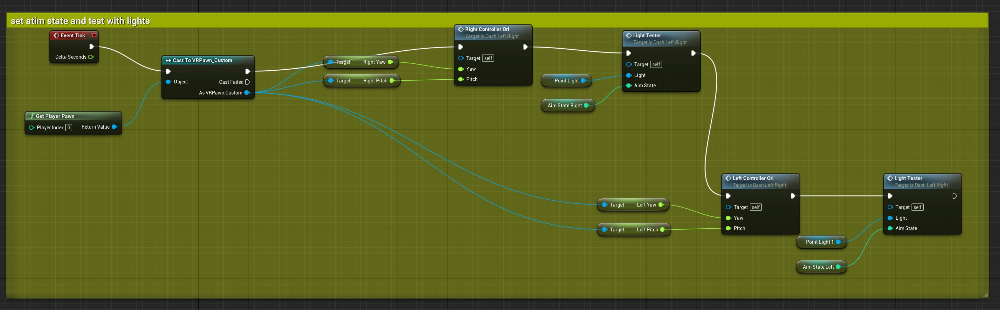
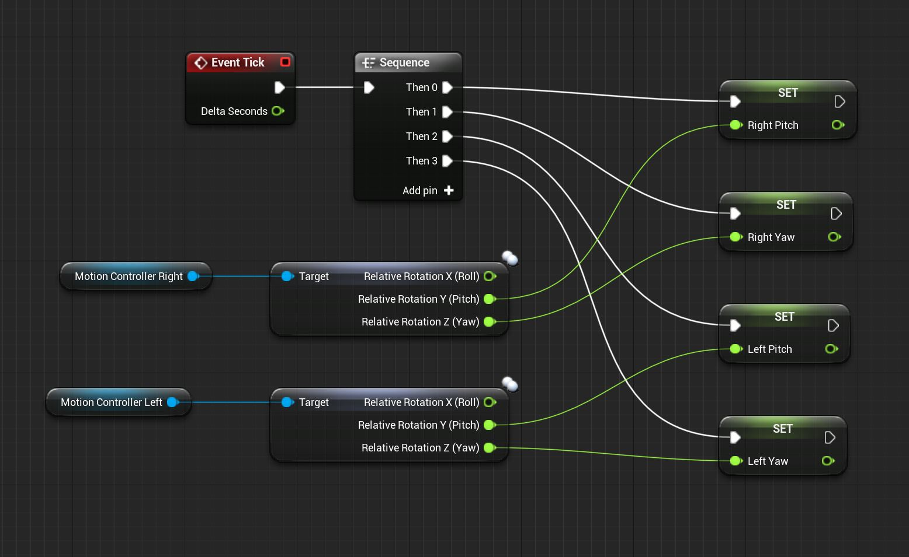
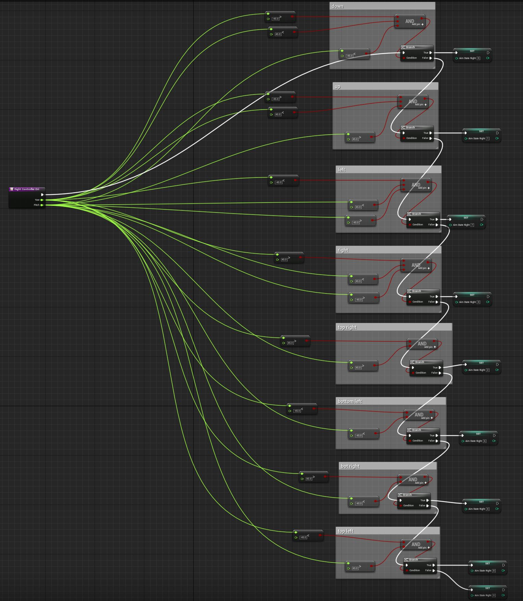
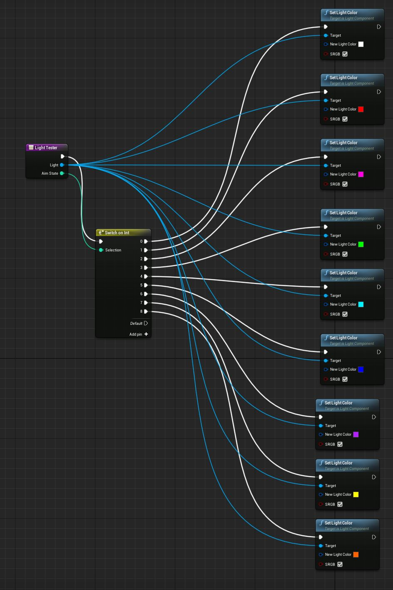
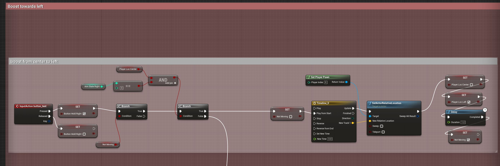
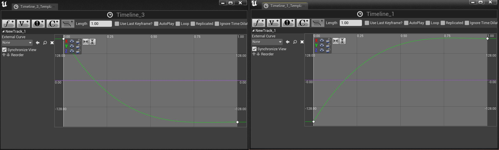
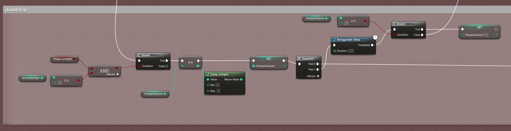
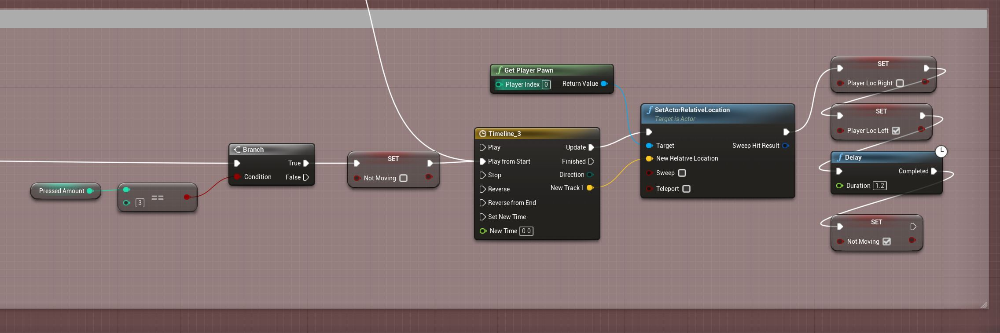
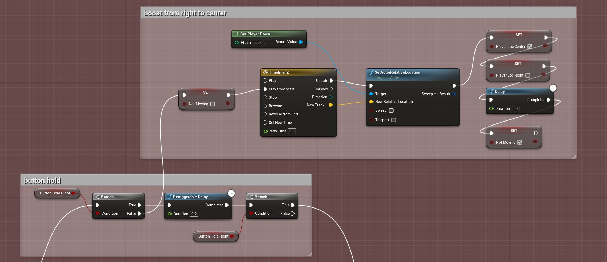
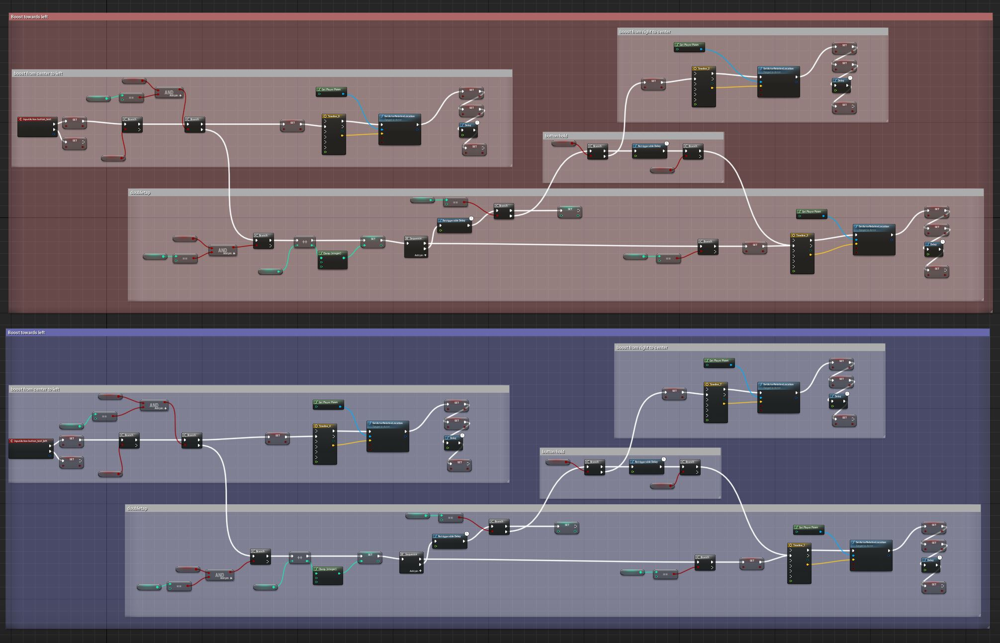

Pre-Thesis Week 7/8 Player Movement Control
Programming Progress: Dash Movement
So diving deep into Unreal Engine's blueprint system, watching all the tutorials and reading through a bunch of documentation and trouble shooting forums, I made some significant progress and learned a lot about some funamentals of game development. The first big challenge I wanted to figure out was player movement, after removing the default VR movement options, being able to move is one of the instinctual things you do when you jump into a game or even posess a new body. I'm currently showing the parts that are of the current build, working on this for weeks now, I've had to learn, remove and modify a lot of parts.  It was quite challenge to try to nail down but this block of code here was one of the first building blocks I had to set up. I set up the player to start the game by possessing my custom character which is just a clone of the default one with normal movement removed so far. Casting is a way for me to obtain specific parts of the object so in this image, I am getting the pitch and yaw of the right and left motion controllers of the Oculus Quest. Pitch, Yaw, and Roll are like fancy flight names for XYZ rotation axis that I had to figure out. The right and left Ori are custom functions I created that use that pitch and yaw which you will see later. The light tester function is a way for me to easily test to see if the aiming system I set up was working correctly which you will also see soon.  Over here you can see a part of the main character's blueprint. I set up these pitch and yaw variables that cast to the other blueprint as see earlier. You can think of these as the real items getting read and then it's data being recorded and saved into variables to be shared and used later  So over here, I set it up so that I take the pitch and yaw and check to see if they hit specific parameters to find the rotation values. For example if you are pointing your finger up and right then I check to see if the value is higher than 45 degrees from parallel to the horizontal plain of your body as well as in front of you. Then I have it set to an integer from one to eight, one being around 12 o clock.  Next I have it check to see what the value of the aim state is currently based on the previous function to change the color of a light. This makes it easier for me to quickly see if my pointing system is working. I got this idea when I was working with arduinos a while back and when you don't have an output line to read, then using LEDs attached to the board to indicate functionality was the next best thing.  So the idea is that you are pointing away from the direction that you want to travel to, you are in a mech suit and you are using blasters to push yourself around in space. After getting the pointing of the controllers working, I had to figure out how to get the player movement working and how the inputs worked. At first I had a lot of issues with things inputting too quickly and skipping animations as well as a great deal more things I had to iron out. Going from left to right, I set up a boolean that checks to see if you are holding the button down which I use later for double movement. I also set up another boolean that checks to see if you are moving or not, this helps the game know when not to trigger another movement. In this image, you are pointing directly to the right and it's checking if you are in the center location, by default I have the player start in the center, if these are all true then it keeps going and sets you as not moving to be false and plays the animation. In this case I have the player move the the left, they are no longer in the center, and they are no longer moving, the delay is to prevent further inputs to be stored in the buffer.  A closer look at the timeline graphs I put together, they all have a very quick initial acceleration and then a gradual stop. This works pretty well so that players can get some nice feedback for dodging but not imediately move again and spam their inputs.  So if the player isn't in the center and they are in the location to the right then I have it so that it checks to see how many times you pressed the button within .2 seconds for a double tap. I'm not completely sure why but I had to use 3 since 2 was triggering off a single press. the ++ node lets me simply add 1 to the variable pressed amount that I made, the clamp stops you from going higher than 3 taps. If you did do a double tap, you continue otherwise it does a normal single dash and sets the value back to 0 after each retriggerable delay.  So if it reads 3, the animation initiates which is a double dash doing pretty much what you saw earlier except the distance traveled is greater and sets you directly into the left position rather than back to the center.  For the button hold, I have it check to see if you are holding the button, if you hold it for longer than .2 seconds you also initiate a double dash. If you aren't double tapping or holding then you'll be just going to the center as normal.  After all this, I copied it over and set things up so that it worked with the other controller as well. Overall I was pretty happy with the result. Right now I feel like I can adjust the speed of the dash to make if feel snappier but I do worry how much I can push it since going too fast I think I did feel some slight signs of motion sickness. The next thing I want to put together is things coming at the player so they can start dodging for real.
home
while (!deck.isInOrder()) {
print 'Iteration ' + i;
deck.shuffle();
i++;
}
print 'It took ' + i + ' iterations to sort the deck.';